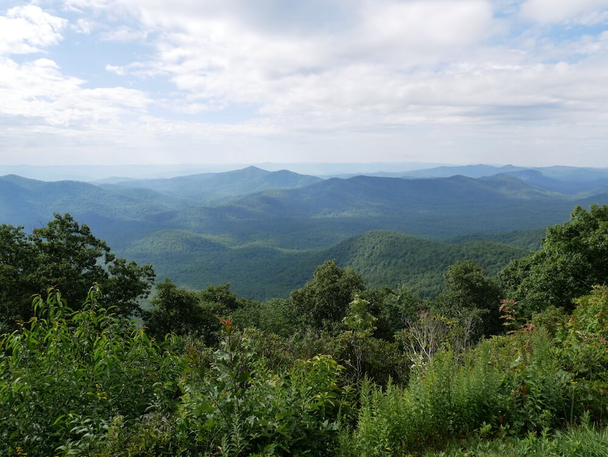
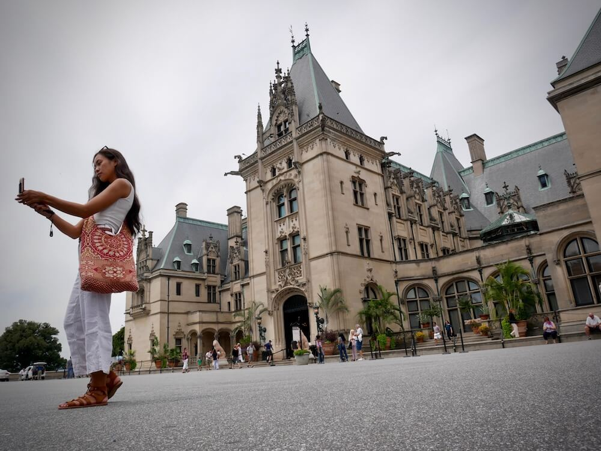
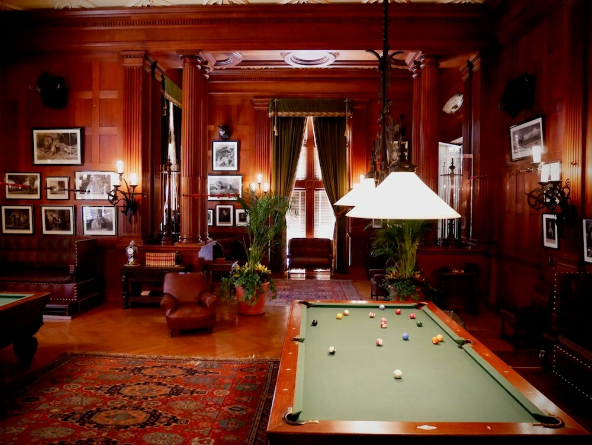
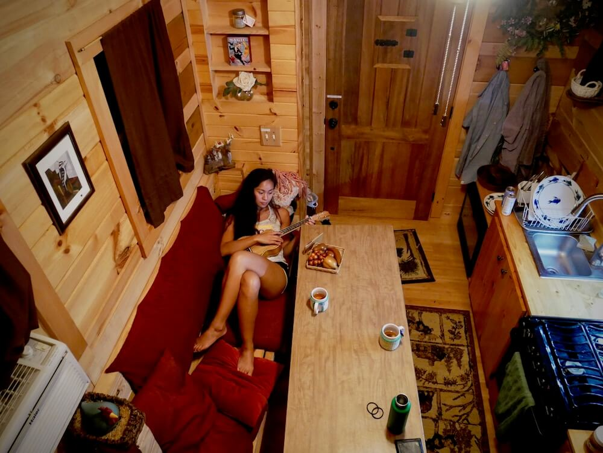
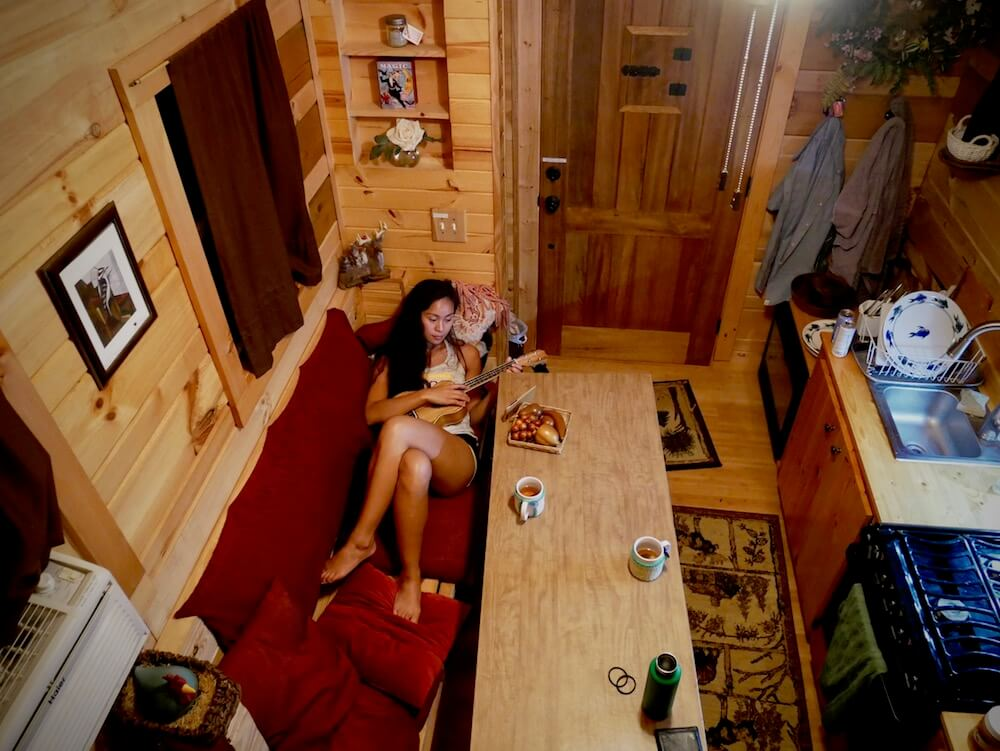
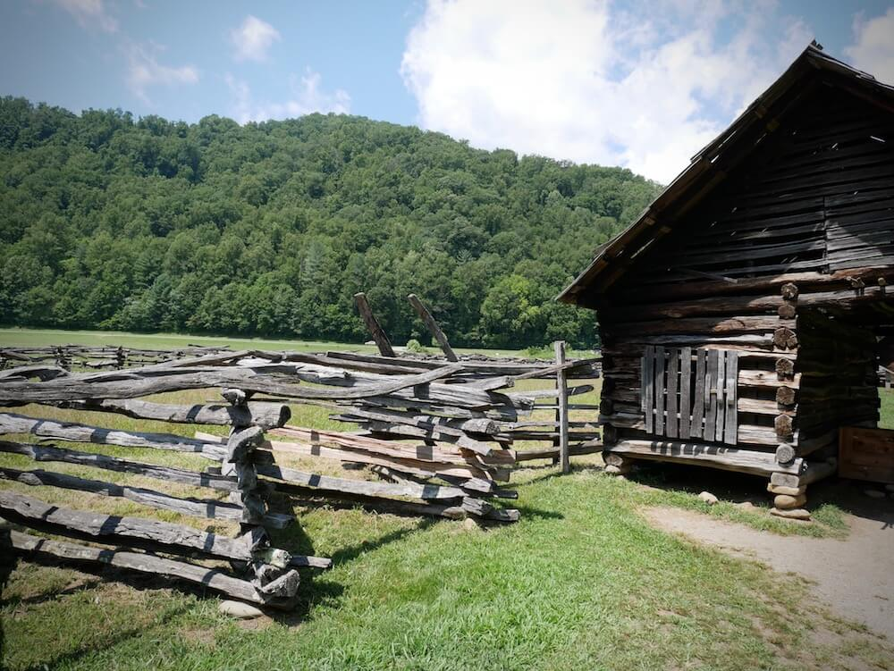
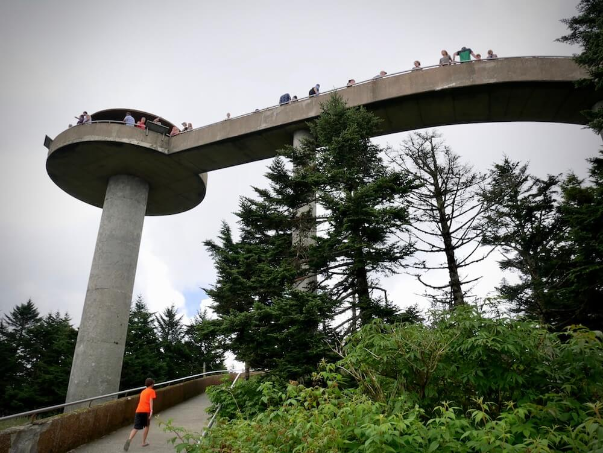
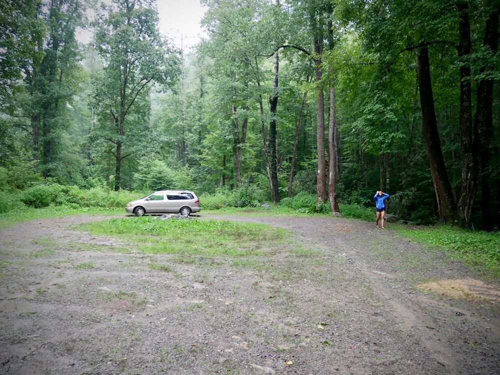

A Tour of the Tar Heel State
August 12, 2017
Highlights
Visiting family in Charlotte
Biltmore Estate
Asheville
Tiny house Airbnb
Great Smoky Mountains National Park
Pisgah National Forest
On Day 3 of our road trip we finished exploring Natural Bridge State Park, Virginia and made it into Charlotte, North Carolina around 6pm. We were just in time for dinner with Jackie's cousin Nerrilee and her husband James. We met them at Moe's original Bar B Que. It was delicious! Nick ordered the brisket, coleslaw, and banana pudding, while Jackie had the ribs, mac n' cheese, and collard greens. We both had Cheerwine to drink and cornbread on the side. We can continue talking about how good the food was but we'll stop here before this blog turns entirely into a food blog (because it easily can with Asheville, Nashville, Memphis , and Austin on the way). But one last thing, Cheerwine is a must when you're here. It's a Carolina staple and a southern favorite. It's the best cherry pop that we've ever had! To finish the day, we stayed the night at an Airbnb close to town.
The next morning, we went to Cook Out in Asheville for some Carolina fast food for brunch. Then we proceeded to the Biltmore Estates to walk it all off. The Biltmore Estates is almost 7,000 acres and includes the largest home in America. It's a beautiful Châteauesque-style mansion built by George Washington Vanderbilt between 1889 and 1895. We purchased tickets in advanced and saved a bit. It was still pretty pricey but it was so worth it. We toured the house and the gardens and went as far as the Bass Pond. If you plan on visiting, charge your camera, wear your walking shoes, bring a water bottle, and put aside at least three hours to enjoy all of the rooms, all of the views, and all of the detail. It's absolutely fascinating to see how the wealthy lived back then.
 After leaving the Biltmore Estates, we did another Asheville must-do: we went looking for beer. With a recommendation from Jackie's friend Alyssa, we went to Wicked Weed Brewery. The food and beer was great. Jackie really enjoyed the Coolcumber and if she had the tolerance to have a second glass she would have. Nick had an IPA, and to pair with our drinks we had the beef tartare and the side salad.
What Jackie was most excited for about North Carolina was staying in a tiny house. We found this gem on Airbnb about a month ago and immediately booked it. It was our first tiny house experience and we really enjoyed it. It was an adorable log cabin house and it had everything that we needed. We had time to wind down here and kind of catch up on some things. We did laundry, played our instruments, and enjoyed some hot tea and toast.
 

The next morning we had amazing breakfast tacos at Taco Billy in Asheville. It was another winning recommendation from Jackie's friend. North Carolina fed us well. Not at all complaining about our PB&Js and rice and tuna road trip diet because we still think about those meals and salivate, but it was definitely a great break.
To finish up in North Carolina, we paid a visit to Great Smoky Mountains National Park and hiked to Clingman's Dome for a view from the highest point in the park. We camped that night in Pisgah National Forest, then made our way to Tennessee.
 Tales from the Tent...
Camp Convict
by Nick
After a day spent driving and hiking through the Great Smoky Mountains National Park, Jackie and I decided to check out Pisgah National Forest for a place to camp. Because reception was good, I punched our destination into Google Maps and we started on our way. Unfortunately, as is often the case with GPS, my phone took us through some extremely sketchy backroads.
Our gravel road turned to dirt and the houses we passed looked ever more dilapidated and neglected. It was raining, the road was extremely narrow and steep, and yet locals in trucks were blowing by us without slowing down. A few people in their driveways gave us a look as we passed that signaled their disapproval of our presence. We began to feel out of place and more than a little on edge. We did eventually find our destination, but our uneasiness about the night had only just begun.
Upon arriving at our campsite we discovered a man's wallet in the dirt. Inside we found a broken North Carolina ID, $100, and a business card for a bail bondsman. Great, we thought, so the last person to stay at our campsite was recently got out of jail and might be back here tonight for his wallet and his money. To make matters worse, I found a mousetrap with a dead mouse in it that was thrown into the campfire ring. Add animal cruelty to this guy's list of positive characteristics. Lest you think Jackie and I were jumping to conclusions about this man, we did in fact look up and find him in the North Carolina court system database.
However, since it was already dark and we were so deep in the forest, Jackie and I decided to stick it out at this location for the night. Freaked out as we were, we didn't even bother setting up our tent. We slept in the van with all the doors locked.
I hope yout don't find this too anticlimactic, but Jackie and I survived the night with no mishaps or run-ins with runaways. We have the wallet with us and will be mailing it back to its owner soon, no harm done.